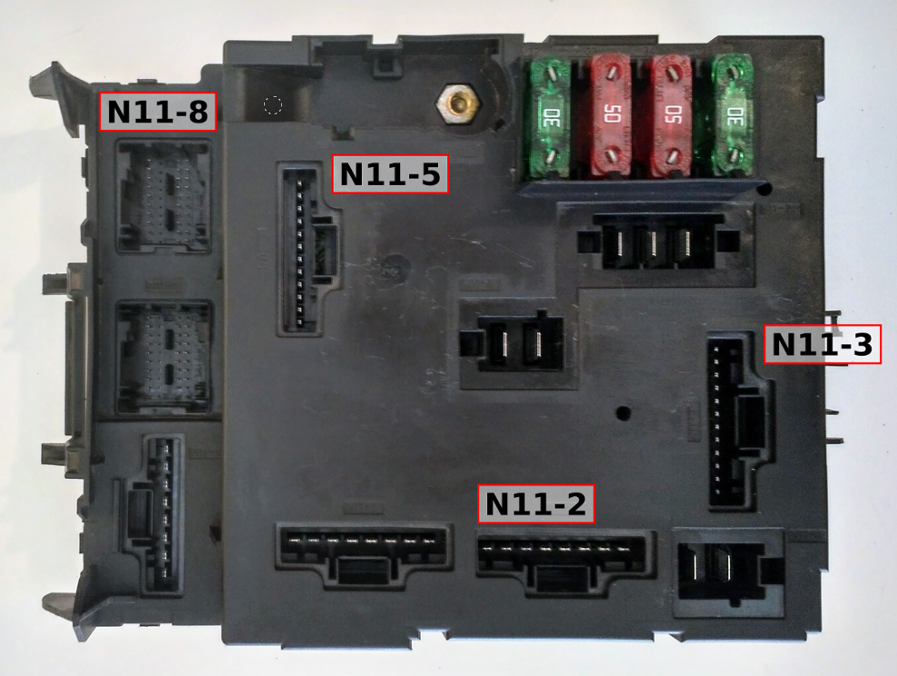

Conexiones de la SAM#
{kind=link}
Pin |
color |
función |
fusible |
|---|---|---|---|
N11-1/1 |
Negro Amarillo/Blanco Negro |
Mando elevalunas |
4 |
N11-1/2 |
Negro Rojo |
Motor calefación, asientos calefactables |
3 |
N11-1/3 |
Negro Amarillo |
Conexiones del AA |
8 |
N11-1/4 |
Rosa Rojo |
Mando limpiaparabrisas |
2 |
N11-1/5 |
Violet |
Luces antinieblas delanteras |
13 |
N11-1/6 |
Rojo Negro |
Controlador ESP |
14 |
N11-1/7 |
Rosa |
Radio |
12 |
N11-1/8 |
Relé principal del motor |
10 |
|
N11-2/1 |
Marrón Verde |
ECU (MEG) |
9 |
N11-2/2 |
Negro |
Retrovisores y luneta trasera calefactable |
28 |
N11-2/3 |
Rojo Blanco |
Ordenador de viaje, OBD, speedo |
11 |
N11-2/4 |
Rojo Verde |
Safety triangle |
11 |
N11-2/5 |
Marrón |
Masa |
|
N11-2/6 |
Amarillo |
Apertura de capota |
29 |
N11-2/7 |
Azul |
ECU (MEG / Relé AMT) |
|
N11-2/8 |
Rojo Blanco |
Cierre de capota |
29 |
N11-3/1 |
Limpiaparabrisas trasero |
17 |
|
N11-3/2 |
Gris/Verde |
Unidad de control ESP |
18 |
N11-3/3 |
Rojo/Amarillo |
Mandos de la capota y retrovisores elect. |
19 |
N11-3/4 |
Azul |
Ordenador de viaje, OBD, speedo, asientos |
20 |
N11-3/5 |
Azul/Amarillo |
Mechero |
21 |
N11-3/6 |
Gris/Rojo |
Luces de cruce |
22 |
N11-3/7 |
Azul/Verde |
Luces de cruce |
23 |
N11-3/8 |
Blanco |
Luces largas |
24 |
N11-3/9 |
Blanco/Azul |
Luces largas |
25 |
N11-3/10 |
Rojo/Negro |
Bomba de gasolina |
16 |
N11-3/11 |
Azul/Rojo |
Sensor luz de freno |
26 |
N11-3/12 |
Rojo/Blanco or Verde/Blanco |
ECU (MEG) |
27 |
N11-4/1 |
Rojo Negro |
Posición de contacto |
1 |
N11-4/2 |
Rojo Azul |
Conector Z24 |
|
N11-5/1 |
|||
N11-5/2 |
Limpiaparabrisas trasero |
17 |
|
N11-5/3 |
Rojo |
Relé del limpiaparabrisas |
|
N11-5/4 |
|||
N11-5/5 |
Marrón |
Masa |
|
N11-5/6 |
Rojo Blanco |
Palanca de luces |
5 |
N11-5/7 |
Marrón Blanco |
Apertura maletero/elevalunas |
6 |
N11-5/8 |
Rojo Verde |
Luz interior |
12 |
N11-5/9 |
Marrón Amarillo/Gris |
Luces traseras |
7 |
N11-5/10 |
Verde |
Connector Z36, EVAP solenoid purge valve |
30 |
N11-5/11 |
Negro Rosa |
ECU (MEG) |
16 |
N11-5/12 |
Amarillo Negro |
Conector Z35 |
10 |
N11-6/1 |
Azul |
Starter |
1 |
N11-6/2 |
Rosa |
Bomba de aire eléctica |
32 |
N11-7/1 |
Rojo Blanco |
Dirección asistida |
35 |
N11-7/2 |
Rojo |
Unidad de control ESP |
34 |
N11-7/3 |
Rojo Negro |
Ignicción principal |
33 |
N11-8/1 |
|||
N11-8/2 |
Marrón Blanco |
Masa |
|
N11-8/3 |
Gris Rojo |
Palanca del limpiaparabrisas |
|
N11-8/4 |
Amarillo Blanco |
Cerradura puerta derecha |
|
N11-8/5 |
|||
N11-8/6 |
|||
N11-8/7 |
|||
N11-8/8 |
Amarillo Verde |
Crash restraint |
|
N11-8/9 |
Rosa Rojo |
Motor del limpiaparabrisas |
|
N11-8/10 |
Verde Azul |
Light stalk and trip PC |
|
N11-8/11 |
Negro Verde |
Control de cruceso pin 2 |
|
N11-8/12 |
|||
N11-8/13 |
Marrón |
Masa |
|
N11-8/14 |
Blanco Negro |
Speedo CAN low |
|
N11-8/15 |
Marrón Rojo |
Speedo CAN high |
|
N11-8/16 |
Rojo |
volante |
|
N11-8/17 |
Amarillo |
Wiper stalk |
|
N11-8/18 |
Azul Negro |
Interruptor de puerta |
|
N11-8/19 |
Amarillo Rojo |
Cerradura puerta izquierda |
|
N11-8/20 |
Verde |
Interruptor de arranque |
|
N11-8/31 |
Azul |
Mando del ventilador |
|
N11-8/32 |
Azul Blanco |
Sensor de larguero capota |
|
N11-8/33 |
Rosa Negro |
Sensor de larguero capota |
|
N11-8/34 |
Gris |
Sensor freno de mano |
|
N11-8/35 |
Blanco |
Alimentación motor de capota |
|
N11-8/36 |
|||
N11-8/37 |
|||
N11-8/38 |
Gris Azul |
Contanto posición 2 |
|
N11-8/39 |
Blanco Negro |
ECU y dirección asistida CAN low |
|
N11-8/40 |
Marrón Rojo |
ECU y dirección asistida CAN high |
|
N11-9/1 |
Negro Blanco |
Señal intermitente izquierdo |
|
N11-9/2 |
Gris |
Mando AA posición 2 |
|
N11-9/3 |
Blanco Gris |
Diagnósticos OBD |
|
N11-9/4 |
Gris Azul |
Luz inteor |
|
N11-9/5 |
|||
N11-9/6 |
Rosa |
Relé de antinieblas |
|
N11-9/7 |
Rosa Rojo |
Control de cruceso pin 1 |
|
N11-9/8 |
|||
N11-9/9 |
Azul Amarillo |
Mando luces automáticas |
|
N11-9/10 |
Verde Azul |
Control de cruceso pin 3 |
|
N11-9/11 |
Negro Verde |
Señal interruptor derecho |
|
N11-9/12 |
Violet Azul |
Mando luces de emergencia |
|
N11-9/13 |
Azul |
Mando cierre centralizado |
|
N11-9/14 |
Violet |
LIN Bus, luces auto, sensor lluvia |
|
N11-9/15 |
|||
N11-9/16 |
Azul Blanco |
Relé del limpiaparabrisas |
|
N11-9/17 |
|||
N11-9/18 |
Azul Amarillo |
Mando luces automáticas |
|
N11-9/19 |
|||
N11-9/20 |
Blanco |
Receptor de llave remota |
|
N11-9/31 |
Verde |
Mando AA posición 1 |
|
N11-9/32 |
Negro Rojo |
Mando de la luna trasera calefactable |
|
N11-9/33 |
Amarillo Rojo |
Palanca de luces |
|
N11-9/34 |
Amarillo |
Palanca de luces |
|
N11-9/35 |
Amarillo Verde |
Palanca de luces |
|
N11-9/36 |
Verde Azul |
Palanca del limpiaparabrisas |
|
N11-9/37 |
Amarillo Negro |
Mando antinieblas |
|
N11-9/38 |
Azul |
Palanca de luces |
|
N11-9/39 |
Negro Verde |
Palanca de luces |
|
N11-9/40 |
Rojo Verde |
Palanca del limpiaparabrisas |
|
N11-10/1 |
Marrón |
Foot well earth |
|
N11-10/2 |
Blanco |
Compresor del AA |
|
N11-10/3 |
Marrón Verde |
Ventilador del radiador |
|
N11-10/4 |
Blanco Azul |
Motor del cierre centralizado abierto |
31 |
N11-10/5 |
Gris Azul |
Motor del cierre centralizado cerrado |
31 |
N11-10/6 |
Azul Rojo |
Claxon |
31 |
N11-10/7 |
Amarillo |
Ventialdor del Intercooler |
15 |
N11-10/8 |
Rojo |
Bobina de apertura del maletero |
31 |
N11-11/1 |
Rojo |
Positivo de batería |
Pins no utilizados#
N11-3/1 - motor del limpiaparabrisas trasero N11-5/1 N11-5/2 - motor del limpiaparabrisas trasero N11-5/4